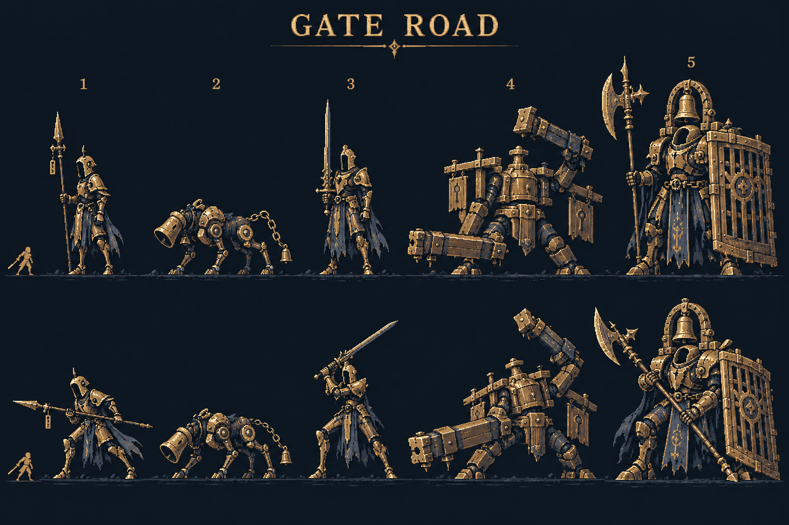
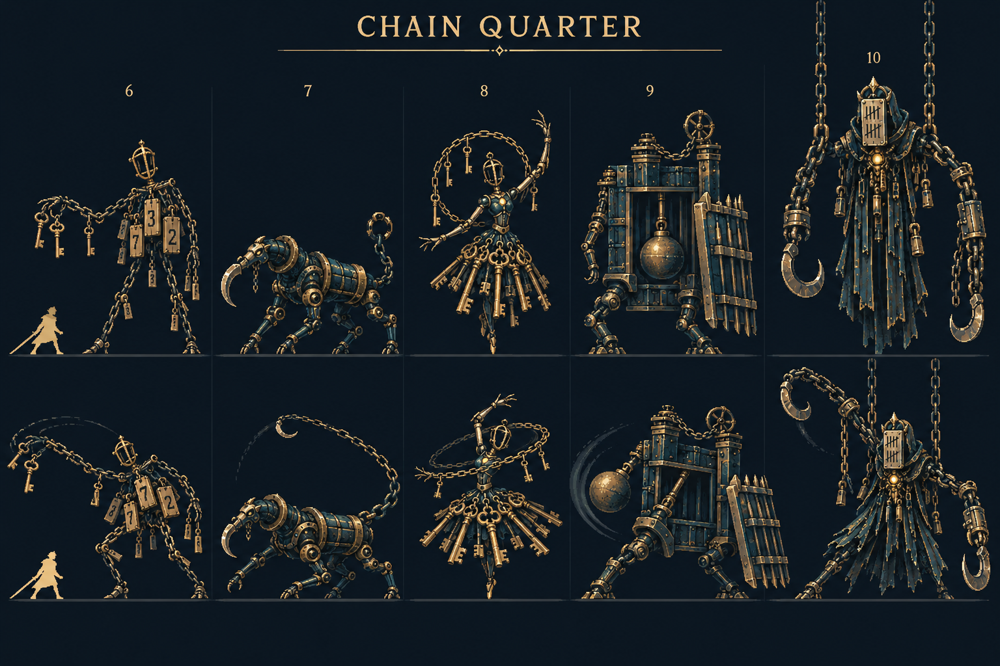

종으로 향하는 길,
첫 두 번의 공격을 읽는 순간.
기획 검토용 미리보기입니다. 게임과 공개 웹 빌드는 변경하지 않았습니다.
처음 게임을 시작할 때 자동으로 나오는 글입니다. 이 미리보기에서는 재생 버튼으로 시작합니다.
프롤로그 전문 읽기
“다음으로 이동” 또는 “5 · 검문소”로 처음 도착하면 이동을 멈추고 종 튜토리얼로 연결됩니다. 슬라이더는 배경만 살펴보는 기능입니다. 미리보기의 완료 상태는 이 페이지를 새로 열면 초기화됩니다.
10 → 11에서 성문이 오른쪽에서 왼쪽으로 넘어갑니다. 11 → 12에서는 성문이 왼쪽 화면 밖으로 빠집니다. 11~20은 확장 구간의 배치 확인이며 실제 프로토타입은 10에서 끝납니다.
연습은 체력 소모가 없습니다. 두 타를 모두 직접 막아야 완료됩니다. 자동 시연은 완료로 세지 않습니다. “전투 계속” 뒤에는 Stage 5 일반 전투의 첫 예고로 돌아갑니다.
타이밍 명세
하단 예고 0·240·480ms → 상단 예고 720·960·1200ms → 타격 1440·1920ms. 두 방향을 모두 예고한 뒤 순서대로 공격합니다. 일반 160ms / 완벽 60ms / 재사용 260ms.
동선과 튜토리얼은 도형으로 만든 연출 모형입니다. 온은 기존 스프라이트를 사용하며, 새 적의 최종 외형은 아래 디자인 시트를 참고해 주세요.
성문 밖 · 1~10스테이지

1 빗장 초병 / 2 종추 사냥개 / 3 금 간 검기사 / 4 검문쇠 거인 / 5 성문 가디언. 숫자는 디자인 번호이며 스테이지 번호가 아닙니다.
성문 안 · 11~20스테이지 확장 기획

6 문패 꼭두각시 / 7 배수로 갈고리개 / 8 사슬 무희 / 9 수문 추지기 / 10 매달린 집행관. AI 콘셉트 시트이며 완성 스프라이트·애니메이션이 아닙니다.
1~20 배치
| Stage | 장소 / 적 | 배경 연결 |
|---|